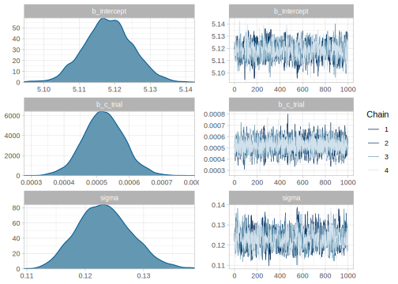

4.1 A first linear regression: Does attentional load affect pupil size?
We’ll look at the effect of cognitive processing on human pupil size to illustrate the use of Bayesian linear regression models. Although pupil size is mostly related to the amount of light that reaches the retina or the distance to a perceived object, pupil sizes are also systematically influenced by cognitive processing: It has been found that increased cognitive load leads to an increase in the pupil size (for a review, see Mathot 2018).
For this example, we’ll use the data of one participant’s pupil size of the control experiment of Wahn et al. (2016) averaged by trial.8 In this experiment, a participant covertly tracked between zero and five objects among several randomly moving objects on a computer screen. This task is called multiple object tracking (or MOT: Pylyshyn and Storm 1988) task. First, several objects appear on the screen, and a subset of them are indicated as “targets” at the beginning. Then, the objects start moving randomly across the screen and become indistinguishable. After several seconds, the objects stop moving and the participant need to indicate which objects were the targets. See also Figure 4.1. Our research goal is to examine how the number of moving objects being tracked, that is how the attentional load, affects pupil size.

FIGURE 4.1: Flow of events in a trial where two objects need to be tracked. Adapted from Blumberg, Peterson, and Parasuraman (2015); licensed under CC BY 4.0.
4.1.1 Likelihood and priors
We will model pupil size as normally distributed, because we are not expecting a skew, and we have no further information available about the distribution of pupil sizes. (Notice that pupil sizes cannot be of size zero or negative, so we know for sure that this choice is not exactly right.) For simplicity, we are also going to assume a linear relationship between load and the pupil size.
Let’s summarize our assumptions:
- There is some average pupil size represented by \(\alpha\).
- The increase of attentional load has a linear relationship with pupil size, determined by \(\beta\).
- There is some noise in this process, that is, variability around the true pupil size i.e., a scale, \(\sigma\).
- The noise is normally distributed.
Our likelihood will be as follows:
\[\begin{equation} p\_size_n \sim Normal(\alpha + c\_load_n \cdot \beta,\sigma) \end{equation}\]
where \(n\) indicates the observation number with \(n = 1 \ldots N\)
This means that the formula that we’ll use in brms will be p_size ~ 1 + c_load, where 1 represents the intercept, \(\alpha\), which doesn’t depend on a covariate or predictor, and c_load is our covariate that is multiplied by \(\beta\). We will generally indicate with the prefix c_, that a covariate (in this case load) is centered (i.e., we subtract from each value the mean of all values). If load is centered, the intercept represents the pupil size at the average load in the experiment (because at the average load, the centered load is zero, and then \(\alpha + 0 \cdot \beta\)). Alternatively, if the load would not have been centered (i.e., starts with no load, then one, two, etc), then the intercept would represent the pupil size when there is no load. Although this formula would be enough to fit a frequentist model with lm(p_size ~ 1 + c_load, dataset), when we fit a Bayesian model, we have to specify priors for each of the parameters.
For setting the priors, we need information about pupil sizes. While we might know that pupil diameters range between 2 to 4 mm in bright light to 4 to 8 mm in the dark (Spector 1990), this experiment was conducted with the Eyelink-II eyetracker which measures the pupils in arbitrary units (Hayes and Petrov 2016). If this is our first analysis of pupil size, before setting up the priors, we’ll need to look at some measures of pupil size. (If we had analyzed this type of data before, we could also look at estimates from previous experiments). Fortunately, we have some measurements of the same participant with no attentional load for the first 100ms, each 10 ms, in pupil_pilot.csv: This will give us some idea about the order of magnitude of our dependent variable.
## Min. 1st Qu. Median Mean 3rd Qu. Max.
## 852 856 862 861 866 868With this information we can set a regularizing prior for \(\alpha\). We center the prior around 1000 to be in the right order of magnitude.9 Since we don’t know how much pupil sizes are going to vary by load yet, we include a rather wide prior by defining it as a normal distribution and setting its standard deviation as \(500\).
\[\begin{equation} \alpha \sim Normal(1000, 500) \end{equation}\]
Given that our covariate load is centered, with the prior for \(\alpha\), we are saying that we suspect that the average pupil size for the average load in the experiment will be in a 95% central interval limited by approximately \(1000 \pm 2 \cdot 500 = [20, 2000]\) units. We can caclulate this in R using the qnorm function:
## [1] 20 1980We know that the measurements of the pilot data are strongly correlated because they were taken together just some milliseconds apart. For this reason, they won’t tell us how much the pupil size can vary. We set up a quite weak prior for \(\sigma\) that encodes our lack of precise information: \(\sigma\) is surely larger than zero and has to be in the order of magnitude of the pupil size with no load.
\[\begin{equation} \sigma \sim Normal_+(0, 1000) \end{equation}\]
With this prior for \(\sigma\), we are saying that we expect that the standard deviation of the pupil sizes should be in the following 95% central interval. (Notice that we use qtnorm(..., a = 0) and not qnorm()).
## [1] 31 2241Notice that the mean of \(Normal_+\), a normal distribution truncated in zero allowing for only positive values, does not coincide with its location indicated with the parameter \(\mu\) (and neither the standard deviation coincides with the scale, \(\sigma\)); see also Box 4.1.
## [1] 803We still need to set a prior for \(\beta\), the change in pupil size produced by the attentional load. Given that pupil size changes are not easily perceptible (we don’t see them in our day-to-day life), we expect them to be much smaller than the pupil size, so we use the following prior:
\[\begin{equation} \beta \sim Normal(0, 100) \end{equation}\]
With the prior of \(\beta\), we are saying that we don’t really know if the attentional load will increase or even decrease the pupil size (notice that is centered in zero), but we do know that one unit of load (that is one more object to track) will potentially change the pupil size in a way that is consistent with the following 95% central interval.
## [1] -196 196That is, we don’t expect changes in size that increase or decrease the pupil size in more than 200 units.
Any distribution can be truncated. For a continuous distribution, the truncated version of the original distribution will have non zero probability density values for a continuous subset of the original coverage. To make it more concrete, in our previous example, the normal distribution has coverage for values between minus infinity to plus infinity, and our truncated version \(Normal_+\) has coverage between zero and plus inifinity: all negative values have a probability density of zero. Let’s see how we can generalize this to be able to understand any truncation of any continuous distribution. (For the discrete case we can simply replace the integral for a sum, and PDF for PMF).
From the axiomatic definitions of probability we know that the area below a PDF, \(f(x)\) must be equal to one (1.1). More formally, this means that the integral of \(f\) evaluated as \(f(\infty <X < \infty)\) should be equal to one:
\[\begin{equation} \int_{-\infty}^{\infty} f(x) dx = 1 \end{equation}\]
But if the distribution is truncated, \(f\), is going to be evaluated in some subset of its possible values, \(f(a <X < b)\); in the specific case of \(Normal_+\), for example, \(a = 0\), and \(b=\infty\). In the general case, this means that the integral of the PDF evaluated for \(a <X < b\) can be lower than one.
\[\begin{equation} \int_{a}^{b} f(x) dx \leq 1 \end{equation}\]
We want to ensure that we build a new PDF for the truncated distribution so that even though it has less coverage than the non-truncated version still integrates to one. To achieve this, we normalize the PDF with restricted coverage, by conditioning the PDF to the actual range it has coverage, that is, by dividing the “unnormalized” PDF by the total area of \(f(a <X < b)\):
\[\begin{equation} PDF_{[a,b]} = \frac{f(x)}{\int_{a}^{b} f(x) dx} \end{equation}\]
The denominator of the previous equation is the difference between the CDF evaluated at \(X = b\) and the CDF evaluated at \(X =a\); this can be written as \(F(b) - F(a)\):
\[\begin{equation} PDF_{[a,b]} = \frac{f(x)}{F(b) - F(a)} \end{equation}\]
For the specific case, where \(f(x)\) is \(Normal(x | 0, \sigma)\) and we want the PDF of \(Normal_+(x | 0, \sigma)\), and thus \(a= 0\) and \(b =\infty\).
\[\begin{equation} Normal_+(x |0, \sigma) = \frac{Normal(x | 0, \sigma)}{1/2} \end{equation}\]
Because \(F(X= b =\infty) = 1\) and \(F(X = a = 0) = 1/2\).
You can verify this in R (and this is valid for any value of sd).
## [1] TRUENotice that unless the truncation of the normal distribution is symmetrical, the location, \(\mu\), of the truncated normal does not coincide with the mean, and for any type of truncation, the scale, \(\sigma\), does not coincide with the standard deviation. Confusingly enough, the arguments of the family of functions *tnorm keep the names of the family of functions *norm, and the location is called mean and the scale sd.
For example, the mean of the truncated normal with boundaries \(a\) and \(b\), given its location and scale is as follows:
\[\begin{equation} \operatorname {E} (X\mid a<X<b) = \mu +\sigma {\frac {\phi (\alpha )-\phi (\beta )}{\Phi (\beta )-\Phi (\alpha )}} \end{equation}\]
where \(\alpha =(a-\mu )/\sigma\), \(\beta =(b-\mu )/\sigma\), \(\phi(X)\) is the PDF of the standard normal (\(\mu=0, \sigma=1\)) evaluated at \(X\), and \(\Phi(X)\) is the CDF of the standard normal evaluated at \(X\).
We build a function in R that calculates the mean for any truncated normal as follows:
mean_n_ab <- function(mu = 0, sigma = 1, a = -Inf, b = Inf) {
alpha <- (a - mu) / sigma
beta <- (b - mu) / sigma
mu + sigma * (dnorm(alpha) - dnorm(beta))/(pnorm(beta) - pnorm(alpha))
}We can try it in R for our \(Normal_+(0, 1000)\):
## [1] 798We get similar results calculating the average of 20000 samples.
mean(rtnorm(20000, 0, 1000, a = 0))4.1.2 The brms model
Before fitting the brms model, we load the data and center the predictor load:
df_pupil_data <- read_csv("data/pupil.csv")
df_pupil_data <- df_pupil_data %>%
mutate(c_load = load - mean(load))
df_pupil_data## # A tibble: 41 x 4
## trial load p_size c_load
## <dbl> <dbl> <dbl> <dbl>
## 1 1 2 1021. -0.439
## 2 2 1 951. -1.44
## 3 3 5 1064. 2.56
## 4 4 4 913. 1.56
## 5 5 0 603. -2.44
## # … with 36 more rowsNow we can fit the brms model:
fit_pupil <- brm(p_size ~ 1 + c_load,
data = df_pupil_data,
family = gaussian(),
prior = c(
prior(normal(1000, 500), class = Intercept),
prior(normal(0, 1000), class = sigma),
prior(normal(0, 100), class = b, coef = c_load)
)) The only difference from our previous models is that we now have a predictor in the formula and in the priors. Priors for predictors are indicated with class = b, and the specific predictor with coef = c_load. If we want to set the same priors to different predictors we can omit the argument coef. We can remove the 1 of the formula, and brm() will fit the exact same model as when we specify 1 explicitly. If we really want to remove the intercept we indicate this with 0 +... or -1 +.... See also the Box 4.2 for more details about the treatment of the intercepts by brms.
We can inspect the output of our model now:

## Family: gaussian
## Links: mu = identity; sigma = identity
## Formula: p_size ~ 1 + c_load
## Data: df_pupil_data (Number of observations: 41)
## Samples: 4 chains, each with iter = 2000; warmup = 1000; thin = 1;
## total post-warmup samples = 4000
##
## Population-Level Effects:
## Estimate Est.Error l-95% CI u-95% CI Rhat
## Intercept 701.90 19.68 663.58 741.29 1.00
## c_load 34.26 11.71 12.04 57.78 1.00
## Bulk_ESS Tail_ESS
## Intercept 3448 2690
## c_load 3544 2636
##
## Family Specific Parameters:
## Estimate Est.Error l-95% CI u-95% CI Rhat
## sigma 128.26 14.57 103.50 159.91 1.00
## Bulk_ESS Tail_ESS
## sigma 3098 2399
##
## Samples were drawn using sampling(NUTS). For each parameter, Bulk_ESS
## and Tail_ESS are effective sample size measures, and Rhat is the potential
## scale reduction factor on split chains (at convergence, Rhat = 1).We discuss how we could communicate the relevant information in the next section.
brms
When we set up a prior for the intercept in brms, we actually set a prior for an intercept given that all the predictors are centered. The reason for this is that brms increases sampling efficiency by automatically centering all the predictors (that is the population-level design matrix X is internally centered around its column means when brms fits a model). This did not matter in our previous examples because we centered our predictor (or we had none), but it might matter if we want to have uncentered predictors. In the design we are discussing, a non-centered predictor of load will mean that the intercept, \(\alpha\), has a straightforward interpretation (in many cases, however, an intercept with a non-centered predictor won’t have a straightforward interpretation): the pupil size when there is no attention load.
We might be more sure about prior values for the no load condition, and we want to set the following prior to our new \(\alpha\): \(Normal(800,200)\). In this case, we should fit the following model:
fit_pupil_non_centered <- brm(p_size ~ 0 + Intercept + load,
data = df_pupil_data,
family = gaussian(),
prior = c(
prior(normal(800, 200), class = b, coef = Intercept),
prior(normal(0, 1000), class = sigma),
prior(normal(0, 100), class = b, coef = load)
))Notice that we remove the regular centered intercept by adding 0 to the formula, and we replace it with the “actual” intercept we want to set priors to with Intercept—this is a reserved word, and thus we cannot name any predictor with this name. This new parameter is also of the class b, so its prior needs to be defined accordingly.
The output below shows that, as expected, while the posterior for the intercept has changed noticeably, the posterior for the effect of load remains virtually unchanged.
## Estimate Est.Error Q2.5 Q97.5
## b_Intercept 624 35.0 555.5 695
## b_load 32 12.0 8.3 56
## sigma 128 15.2 102.5 162
## lp__ -271 1.3 -274.3 -270Notice the following potential pitfall. A model like the one below will fit a non-centered load predictor, but will assign a prior of \(Normal(800,200)\) to the intercept of a centered model, \(\alpha_{centered}\), and not the current intercept, \(\alpha\).
fit_pupil_wrong <- brm(p_size ~ 1 + load,
data = df_pupil_data,
family = gaussian(),
prior = c(
prior(normal(800, 100), class = Intercept),
prior(normal(0, 1000), class = sigma),
prior(normal(0, 100), class = b, coef = load)
))What does it mean to set a prior to \(\alpha_{centered}\) in a model that doesn’t include \(\alpha_{centered}\)?
Notice that the fitted values of the non-centered model and the centered one are identical, that is, the expected values of the response distribution without the residual error (when \(\sigma =0\)) are identical for both models:
\[\begin{equation} \alpha + load_n \cdot \beta = \alpha_{centered} + (load_n - mean(load)) \cdot \beta \tag{4.1} \end{equation}\]
The left side of Equation (4.1) refers to the fitted values based on our current non-centered model, and the right side refers to the fitted values based on the centered model. We can re-arrange terms to understand what is the effect of a prior on \(\alpha_{centered}\) in our model that doesn’t include \(\alpha_{centered}\).
\[\begin{equation} \begin{aligned} \alpha + load_n \cdot \beta &= \alpha_{centered} + load_n\cdot \beta - mean(load) \cdot \beta\\ \alpha &= \alpha_{centered} - mean(load) \cdot \beta\\ \alpha + mean(load) \cdot \beta &= \alpha_{centered} \end{aligned} \end{equation}\]
That means that we are actually setting our prior to \(\alpha + mean(load) \cdot \beta\). When \(\beta\) is very small, and the prior for \(\alpha\) is very wide, we might hardly notice the difference between setting a prior to \(\alpha_{centered}\) or to our actual \(\alpha\) in a non-centered model (especially if the likelihood dominates anyway). But it’s a good idea to pay attention to what are the parameters we are setting priors to.
4.1.3 How to communicate the results?
We want to answer our research question “What is the effect of attentional load on the participant’s pupil size?” For that we’ll need to examine what happens with \(\beta\), which is c_load in the summary of brms. The summary of the posterior tells us that the most likely values of \(\beta\) will be around the mean of the posterior, 34.26, and we can be 95% certain that the true value of \(\beta\) given the model and the data lies between 12.04 and 57.78.
We see that as the attentional load increases, the pupil size of the participant becomes larger. If we want to determine how likely it is that the pupil size increased rather than decreased, we can examine the proportion of samples above zero. (Notice that the intercept and the slopes, are always preceded by b_ in brms. One can see all the names of parameters being estimated with parnames().)
## [1] 1Take into account that this probability ignores the possibility of the participant not being affected at all by the manipulation, this is because \(P(\beta=0)=0\), we’ll come back to this issue in the model comparison section ??.
4.1.4 Descriptive adequacy
Our model converged and we obtained a posterior distribution. There is, however, no guarantee that our model was adequate to represent our data. We can use posterior predictive checks to verify this.
Sometimes it’s useful to build our own posterior predictive check to visualize the fit of our model, as opposed to use the pp_check functions as we did before in section 3.5. For example, here we use posterior_predict() to generate 1000 posterior predictive distributions, and we convert them from an array to a long data frame.
# we start from an array of 1000 samples by 41 observations
df_pupil_pred <- posterior_predict(fit_pupil, nsamples = 1000) %>%
# we convert it to a list of length 1000, with 41 observations in each element:
array_branch(margin = 1) %>%
# We iterate over the elements (the predicted distributions)
# and we convert them into a long data frame similar to the data,
# but with an extra column `iter` indicating from which iteration
# the sample is coming from.
map_dfr( function(yrep_iter) {
df_pupil_data %>%
mutate(p_size = yrep_iter)
}, .id = "iter") %>%
mutate(iter = as.numeric(iter))Then we plot 100 of the densities of the predicted distributions in blue, and the distribution of our data in black for the five levels of load in Figure 4.2. We don’t have enough data to derive a strong conclusion: Notice that both the predictive distributions and our data look very wide, and it hard to tell if the distribution of the observations could have been generated by our model. For now we can say that it doesn’t look too bad.
df_pupil_pred %>% filter(iter < 100) %>%
ggplot(aes(p_size, group=iter)) +
geom_line(alpha = .05, stat="density", color = "blue") +
geom_density(data=df_pupil_data, aes(p_size),
inherit.aes = FALSE, size =1)+
geom_point(data=df_pupil_data, aes(x=p_size, y = -0.001), alpha =.5,
inherit.aes = FALSE)+
coord_cartesian(ylim=c(-0.002, .01))+
facet_grid(load ~ .) 
FIGURE 4.2: The plot shows 100 predicted distributions in blue density plots, the distribution of pupil size data in black density plots, and the observed pupil sizes in black dots for the five levels of attentional load.
We can instead look at the distribution of a statistic, such as mean pupil size by load:
# predicted means:
df_pupil_pred_summary <- df_pupil_pred %>%
group_by(iter, load) %>%
summarize(av_p_size = mean(p_size))
# observed means:
df_pupil_summary <- df_pupil_data %>%
group_by(load) %>%
summarize(av_p_size = mean(p_size))ggplot(df_pupil_pred_summary, aes(av_p_size)) +
geom_histogram(alpha=.5)+
geom_vline(aes(xintercept= av_p_size),data= df_pupil_summary)+
facet_grid(load ~ .)
FIGURE 4.3: Distribution of posterior predicted means in gray and observed pupil size means in black lines by load.
Figure 4.3 shows that the observed means for no load and for a load of one are falling in the tails of the distributions. While our model predicts a monotonic increase of pupil size, the data might be indicating that the relevant difference is between (i) no load, (ii) a load between two and three, and then (iii) a load of four, and (iv) of five. However, given the uncertainty in the posterior predictive distributions and that the observed means are contained somewhere in the predicted distributions, it could be the case that with this we are overinterpreting noise.
References
Blumberg, Eric J., Matthew S. Peterson, and Raja Parasuraman. 2015. “Enhancing Multiple Object Tracking Performance with Noninvasive Brain Stimulation: A Causal Role for the Anterior Intraparietal Sulcus.” Frontiers in Systems Neuroscience 9: 3. https://doi.org/10.3389/fnsys.2015.00003.
Hayes, Taylor R., and Alexander A. Petrov. 2016. “Mapping and Correcting the Influence of Gaze Position on Pupil Size Measurements.” Behavior Research Methods 48 (2): 510–27. https://doi.org/10.3758/s13428-015-0588-x.
Mathot, Sebastiaan. 2018. “Pupillometry: Psychology, Physiology, and Function.” Journal of Cognition 1 (1): 16. https://doi.org/10.5334/joc.18.
Pylyshyn, Zenon W., and Ron W. Storm. 1988. “Tracking Multiple Independent Targets: Evidence for a Parallel Tracking Mechanism.” Spatial Vision 3 (3): 179–97. https://doi.org/10.1163/156856888X00122.
Spector, Robert H. 1990. “The Pupils.” In Clinical Methods: The History, Physical, and Laboratory Examinations, edited by H. Kenneth Walker, W. Dallas Hall, and J. Willis Hurst, 3rd ed. Boston: Butterworths.
Wahn, Basil, Daniel P. Ferris, W. David Hairston, and Peter König. 2016. “Pupil Sizes Scale with Attentional Load and Task Experience in a Multiple Object Tracking Task.” PLOS ONE 11 (12): e0168087. https://doi.org/10.1371/journal.pone.0168087.
The full dataset can be found in https://osf.io/z43dz/. We show our preprocessing in the appendix of this chapter, section 4.7.1.↩
The average pupil size will probably be higher than 800, since this measurement was with no load, but, in any case, the exact number won’t matter, any mean between 500-1500 would be fine if the standard deviation is large.↩